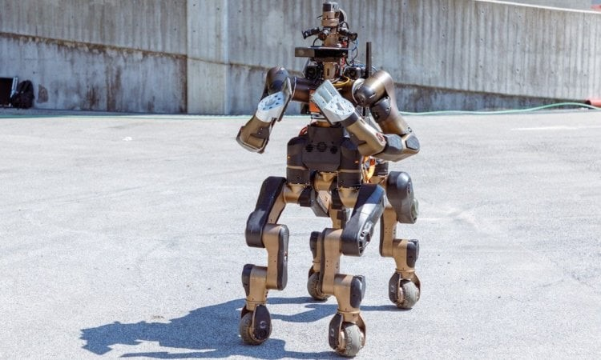

Новости о робототехнике
-
Centauro: робот-кентавр для спасения людей
При создании роботов ученые и инженеры нередко вдохновляются самой природой. Но вот роботов на основе мифических существ встретишь далеко не так часто. Причем новое творение Centauro, названием и внешним видом отсылающее нас к существам древнегреческой мифологии, создано не ради забавы, а для спасения человеческих жизней.
Как сообщает издание Engadget, за разработкой робота стоят специалисты из Итальянского технологического института и Боннского университета. Centauro был создан на базе более раннего робота-прототипа Momaro. Высота робокентавра достигает 1,5 метра, а весит он 93 килограмма. Каркас робота выполнен из легких металлических сплавов, а «тело» покрыто пластиком, напечатанном на 3D-принтере.
Как заявляют разработчики, Centauro может легко преодолевать препятствия благодаря ногам с 6 степенями свободы, а также поднимать тяжелые предметы, что идеально подойдет для проведения поисково-спасательных операций.